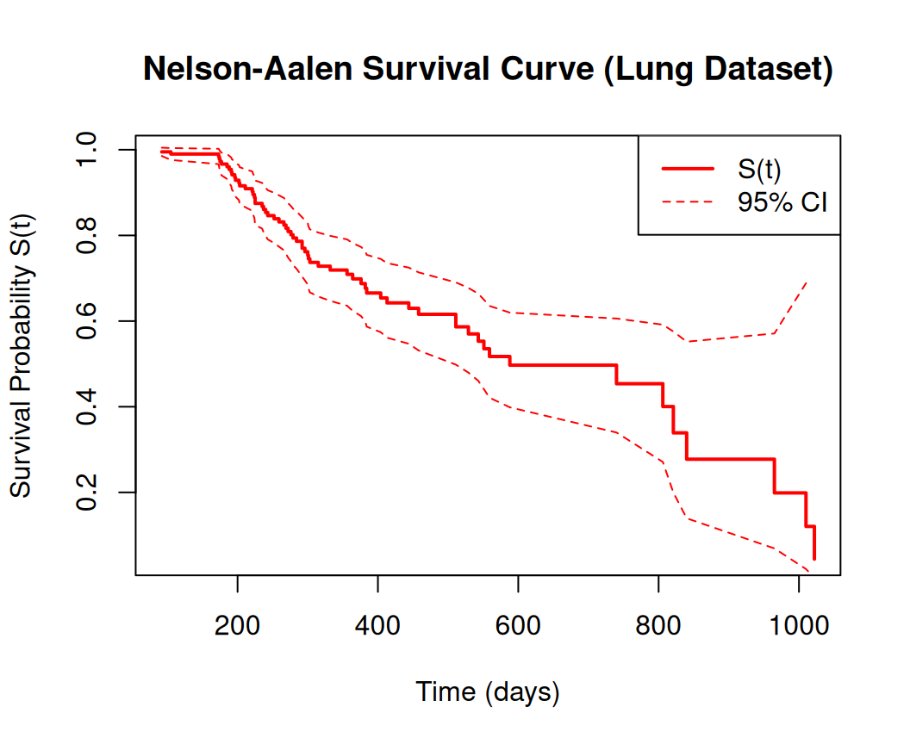
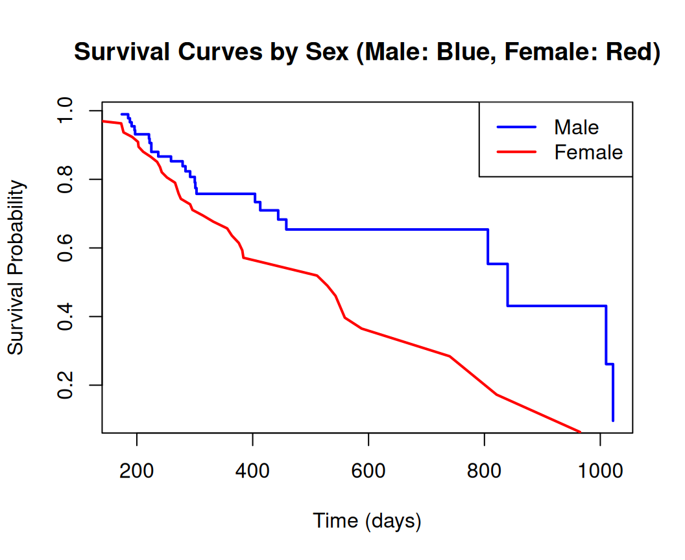

This tutorial provides a hands-on introduction to the Nelson-Aalen estimator, a key non-parametric method in survival analysis. We’ll use the lung dataset from the survival package in R, which contains data from a clinical trial on lung cancer patients. The tutorial is structured to guide you step-by-step, from theory to practical implementation. By the end, you’ll be able to compute cumulative hazard estimates, plot survival curves, and compare groups.
All code examples can be run in R or RStudio. Ensure you have the survival package installed (install.packages("survival") if needed).
Overview
Survival analysis studies the time until an event of interest occurs, such as patient death or disease recurrence. A challenge is handling censoring, where the event is not observed for all subjects (e.g., patients still alive at study end). Non-parametric methods like the Kaplan-Meier estimator for survival probability and the Nelson-Aalen estimator for the cumulative hazard function are foundational tools.
In this tutorial, we’ll focus on the Nelson-Aalen estimator, which estimates the cumulative hazard function \(H(t)\), representing the accumulated risk up to time \(t\). The survival probability \(S(t)\) relates to it via \(S(t) = \exp(-H(t))\). We’ll apply it to the lung dataset:
Dataset Overview: 228 observations from a lung cancer trial (1960s). Key variables:
Other covariates: age, ph.ecog (performance status), etc.
We’ll compute estimates, plot curves, find medians, and compare male vs. female survival using the log-rank test.
The Nelson-Aalen estimator is a non-parametric estimate of the cumulative hazard function \(H(t) = \int_0^t h(u) \, du\), where \(h(u)\) is the hazard rate (instantaneous risk of event at time \(u\), given survival to \(u\).
Under the assumption of independent censoring, the estimator is:
\(n_i\): Number of individuals at risk just before \(t_i\) (those who haven’t experienced the event or been censored yet).
This is a step function that jumps at each event time by \(d_i / n_i\). The variance estimate is $^2(t) = _{t_i t} $, useful for confidence intervals.
Unlike the Kaplan-Meier (which estimates \((t)\) directly and handles ties differently), Nelson-Aalen focuses on the hazard and is more straightforward for cumulative risk. It’s implemented in R’s survival package via survfit().
Nelson-Aalen estimator from Scratch
In this tutorial, we’ll implement the Nelson-Aalen Estimator from scratch in R using the lung dataset from the survival package. We’ll avoid directly using survfit(..., type = "aalen") for the core computation, instead manually calculating the cumulative hazard function $ (t) = _{t_i t} $. We’ll then derive the survival function, compute confidence intervals, estimate x-year survival probabilities, plot the survival curve, calculate the median survival time, and compare survival between groups (male vs. female) using the log-rank test. The survival package will be used for data handling and the log-rank test, but the Nelson-Aalen computation will be coded manually.
Data
Code
library(survival)# Load the lung datasetdata(lung)# Create a data frame with time, status, and sexdata <-data.frame(time = lung$time,status = lung$status, # 1 = event (death), 0 = censoredsex = lung$sex # 1 = male, 2 = female)
Function to compute Nelson-Aalen estimator from scratch
Code
# Function to compute Nelson-Aalen estimator from scratchnelson_aalen <-function(time, status) {# Ensure data is sorted by time ord <-order(time) time <- time[ord] status <- status[ord]# Identify unique event times (where status == 1) event_times <-unique(time[status ==1]) event_times <-sort(event_times)# Initialize vectors n_risk <-numeric(length(event_times)) # Number at risk n_event <-numeric(length(event_times)) # Number of events cumhaz <-numeric(length(event_times)) # Cumulative hazard variance <-numeric(length(event_times))# Variance of cumhaz# Compute n_i (at risk) and d_i (events) at each event timefor (i inseq_along(event_times)) { t_i <- event_times[i] n_risk[i] <-sum(time >= t_i) # Subjects still at risk n_event[i] <-sum(time == t_i & status ==1) # Events at t_i cumhaz[i] <-ifelse(i ==1, 0, cumhaz[i-1]) + n_event[i] / n_risk[i] variance[i] <-ifelse(i ==1, 0, variance[i-1]) + n_event[i] / (n_risk[i] * (n_risk[i] - n_event[i])) }return(list(time = event_times,n.risk = n_risk,n.event = n_event,cumhaz = cumhaz,variance = variance ))}
Compute Nelson-Aalen for the entire dataset
Code
# Compute Nelson-Aalen for the entire datasetna_fit <-nelson_aalen(data$time, data$status)summary(na_fit)
# Plot Survival Curveplot(na_fit$time, survival, type ="s", col ="red", lwd =2,xlab ="Time (days)", ylab ="Survival Probability S(t)",main ="Nelson-Aalen Survival Curve (Lung Dataset)")lines(na_fit$time, lower_surv, col ="red", lty =2)lines(na_fit$time, upper_surv, col ="red", lty =2)legend("topright", c("S(t)", "95% CI"), col ="red", lty =c(1, 2), lwd =c(2, 1))

Median Survival Time
Code
# Median Survival Time# Find time where S(t) <= 0.5median_idx <-min(which(survival <=0.5))median_time <- na_fit$time[median_idx]cat("Median Survival Time:", median_time, "days\n")
Median Survival Time: 588 days
Survival Times Between Groups (Male vs. Female)
Code
# Survival Times Between Groups (Male vs. Female)# Subset data by sexdata_male <-subset(data, sex ==1)data_female <-subset(data, sex ==2)# Compute Nelson-Aalen for each groupna_male <-nelson_aalen(data_male$time, data_male$status)na_female <-nelson_aalen(data_female$time, data_female$status)# Derive survival curvessurv_male <-exp(-na_male$cumhaz)surv_female <-exp(-na_female$cumhaz)
Code
# Survival Times Between Groups (Male vs. Female)# Plot survival curves by groupplot(na_male$time, surv_male, type ="s", col ="blue", lwd =2,xlab ="Time (days)", ylab ="Survival Probability",main ="Survival Curves by Sex (Male: Blue, Female: Red)")lines(na_female$time, surv_female, col ="red", lwd =2)legend("topright", c("Male", "Female"), col =c("blue", "red"), lwd =2)

Log-rank test for group comparison
Code
# Log-rank test for group comparisonsurv_obj <-Surv(time = data$time, event = data$status)logrank_test <-survdiff(surv_obj ~ data$sex)print(logrank_test)
In this section, we will demonstrate how to compute the Nelson-Aalen estimator using R’s survival package. We’ll cover loading the data, calculating the estimator, estimating x-year survival probabilities, plotting survival curves, calculating median survival time, and comparing survival between groups using the log-rank test.
Install Required R Packages
Following R packages are required to run this notebook. If any of these packages are not installed, you can install them using the code below:
# Calculating the Nelson-Aalen Estimator# Use survfit to compute the cumulative hazard (Nelson-Aalen estimator)fit_na <-survfit(surv_obj ~1, type ="fh") # 'fh' specifies Fleming-Harrington (Nelson-Aalen)
Extract key components
Code
na_summary <-summary(fit_na)times <- na_summary$timen_risk <- na_summary$n.riskn_event <- na_summary$n.eventcumhaz <- na_summary$cumhazstd_err <- na_summary$std.chaz # Standard error of cumhaz# Derive survival function S(t) = exp(-H(t))survival <-exp(-cumhaz)# Compute 95% confidence intervals for cumulative hazard and survivalz <-qnorm(0.975) # Z-score for 95% CIlower_haz <- cumhaz - z * std_errupper_haz <- cumhaz + z * std_errlower_surv <-exp(-upper_haz) # Lower survival boundupper_surv <-exp(-lower_haz) # Upper survival bound# Print a few rows of the resultscat("Sample of Nelson-Aalen Estimates:\n")
# Alternatively, plot survival curve (derived from Nelson-Aalen)plot(fit_na, xlab ="Time (days)", ylab ="Survival Probability S(t)",main ="Survival Curve (from Nelson-Aalen)", col ="red", lwd =2)
The cumulative hazard plot shows a rising step function, while the survival plot decreases toward 0.
Median Survival Time
The median is the time where \(\hat{S}(t) = 0.5\), or \(\hat{H}(t) = \ln(2) \approx 0.693\).
Code
# Median from survival curvemedian_time <-median(fit_na)cat("Median Survival Time:", median_time, "days\n")
Median Survival Time: 310 days
Code
# Or manually: find time where cumhaz >= log(2)log2 <-log(2)median_idx <-min(which(fit_na$cumhaz >= log2))median_manual <- fit_na$time[median_idx]cat("Manual Median (days):", median_manual, "\n")
Manual Median (days): 310
Survival Times Between Groups (Male/Female) Using the Log-Rank Test
Compare groups by sex. Fit stratified models and use survdiff() for the log-rank test (tests if survival curves differ).
Code
# Fit Nelson-Aalen by sexfit_by_sex <-survfit(surv_obj ~ sex, data = data)# Summary ofsummary(fit_by_sex)
In this tutorial, we explored the Nelson-Aalen estimator using the lung dataset. We covered its theory as a cumulative hazard estimator, data preparation with Surv(), computation via survfit(), x-year survival estimates, plotting, median calculation, and group comparisons with the log-rank test. Key takeaways:
Nelson-Aalen is robust and non-parametric, ideal for exploratory analysis.
It complements Kaplan-Meier by focusing on hazard accumulation.
In the lung data, overall median survival is ~310 days, with females faring better (log-rank p=0.0065).
This method is foundational for more advanced models like Cox regression. Practice with your own data to build intuition.
Resources
Books:
Klein, J. P., & Moeschberger, M. L. (2003). Survival Analysis: Techniques for Censored and Truncated Data. Springer.
Therneau, T. M., & Grambsch, P. M. (2000). Modeling Survival Data: Extending the Cox Model. Springer.
Online:
R survival package vignette: vignette("survival").